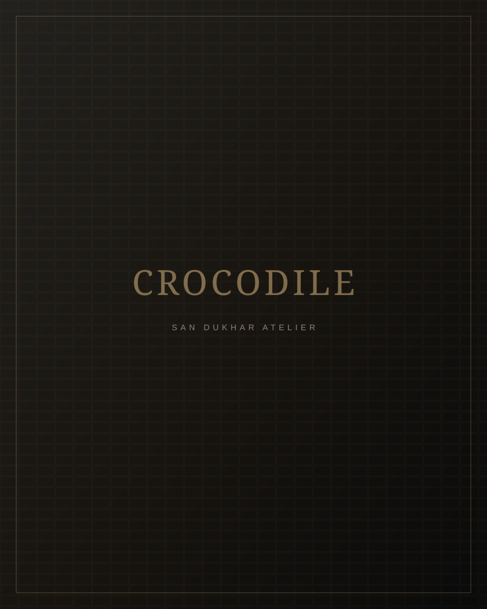
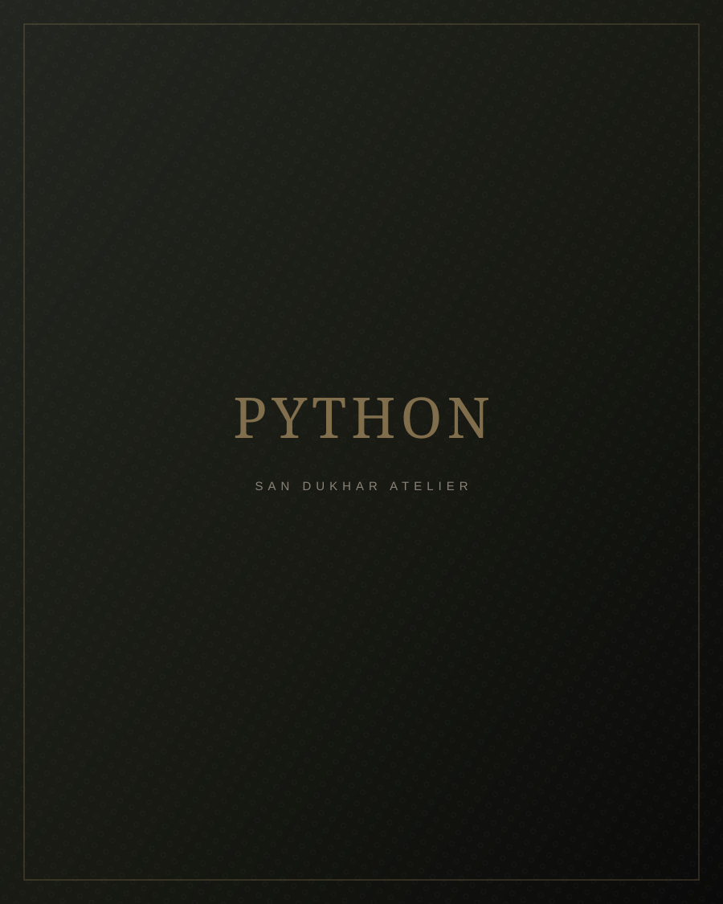
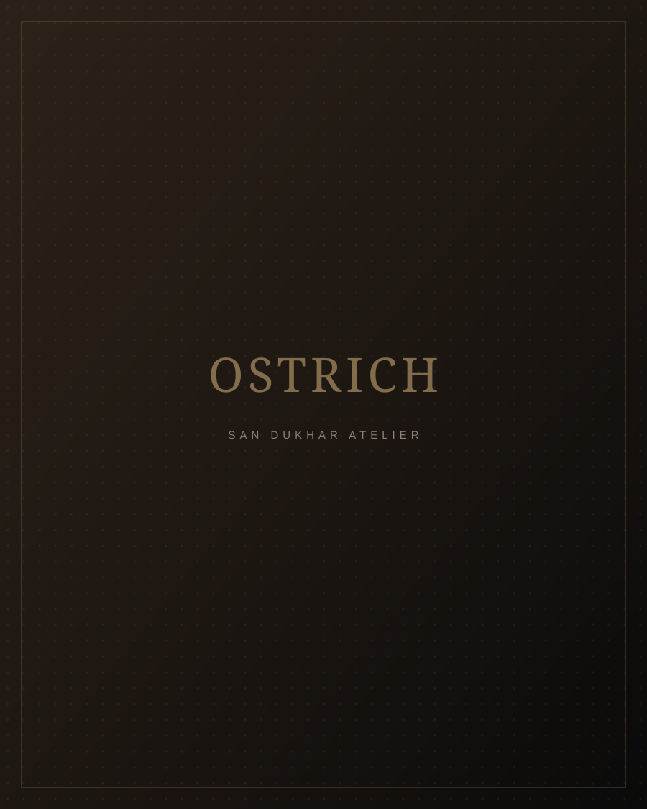
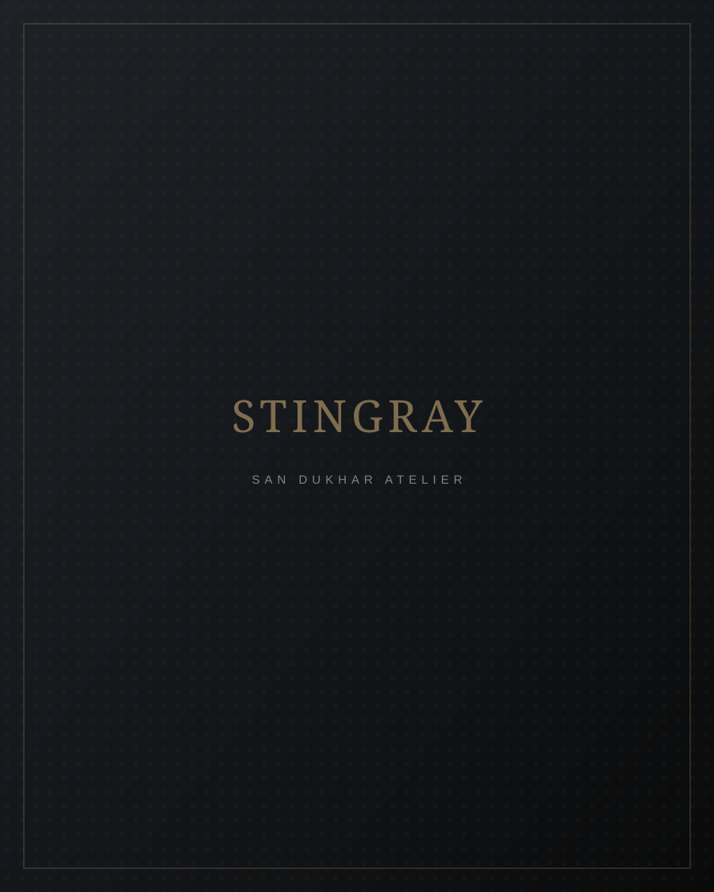
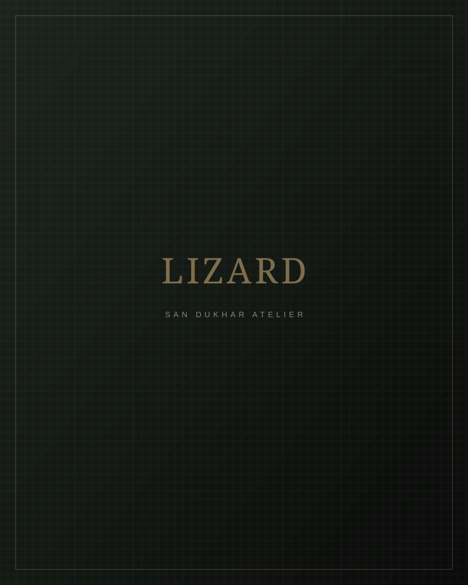

Exquisite Materials
Nature's most extraordinary skins, ethically sourced and transformed by human hands into objects of enduring beauty.
A Philosophy of Material
We believe that the foundation of any exceptional creation lies in its raw material. Our atelier sources exclusively from CITES-certified farms where animal welfare and environmental stewardship are paramount. Each skin is individually selected by our master artisans for its symmetry, texture, and character.

01 — Porosus & Niloticus
Crocodile Leather
The undisputed king of exotic leathers. Crocodile skin is defined by its regular, rectangular scale pattern with prominent pore markings — a hallmark of authenticity that cannot be replicated. We work exclusively with Nile crocodile (Crocodylus niloticus) and saltwater crocodile (Crocodylus porosus), sourced from farms in Madagascar, Zimbabwe, and Australia.
Origin
Madagascar, Zimbabwe, Northern Australia
Character
Uniform tile-like scales, natural sheen, exceptional durability
Patina
Develops a rich, deep luster over decades of use
Care
Occasional conditioning with natural oils. Avoid prolonged moisture.
Available Finishes

02 — Reticulatus & Molurus
Python Leather
Python skin is immediately recognizable by its dramatic, overlapping scale pattern that creates a natural three-dimensional effect. Each skin is utterly unique — a fingerprint of nature. We source from Southeast Asian farms where pythons are raised for their skins as part of a regulated trade that supports local communities.
Origin
Indonesia, Malaysia, Vietnam
Character
Supple, lightweight, dramatic scale pattern
Patina
Softens and gains character with wear
Care
Gentle brushing to maintain scale alignment. Avoid friction.
Available Finishes

03 — Struthio Camelus
Ostrich Leather
Ostrich leather is celebrated for its unique quill follicle pattern — the small bumps where feathers once grew. This creates a surface that is both visually striking and remarkably durable. We use only full-quill ostrich from the crown of the skin, sourced from South African farms with the highest ethical standards.
Origin
South Africa, Oudtshoorn region
Character
Soft, pliable, distinctive quill pattern
Patina
Darkens gracefully, follicles become more pronounced
Care
Hydrate with specialized ostrich leather cream. Avoid heat.
Available Finishes

04 — Galuchat
Stingray Leather
Stingray leather — known in French as galuchat — is one of the most durable and distinctive exotic materials in existence. Its surface is covered in tiny calcium deposits that form a natural armor. When polished, these deposits create a mesmerizing shimmer that changes with the light. Our stingray skins come from sustainable fisheries in Thailand and Indonesia.
Origin
Thailand, Indonesia coastal waters
Character
Extremely durable, shimmering pearl-like surface
Patina
Calcium pearls polish naturally with use
Care
Wipe with soft dry cloth. Virtually waterproof.
Available Finishes

05 — Teju & Varanus
Lizard Leather
Lizard skin offers a refined, understated elegance with its small, uniform scales that create a subtle geometric pattern. We use two varieties: Teju lizard from South America, known for its smooth, fine scales, and Varanus from Southeast Asia, which has a slightly more textured surface. Both are prized for their flexibility and sophisticated appearance.
Origin
Argentina, Indonesia, Malaysia
Character
Fine uniform scales, lightweight, elegant
Patina
Develops a subtle sheen over time
Care
Light conditioning. Store away from direct light.
Available Finishes
The Art of Preservation
Your SAN DUKHAR creation is designed to be passed down through generations. Proper care will ensure it ages with grace and dignity.
Avoid Water
Exotic leathers are naturally resistant but not waterproof. If exposed to rain, pat dry immediately with a soft, absorbent cloth and allow to air dry away from direct heat.
Mind the Sun
Prolonged exposure to direct sunlight can cause fading and drying. Store your pieces in their SAN DUKHAR dust bags when not in use.
Condition Regularly
Apply a specialized exotic leather conditioner every 6–12 months. Use sparingly — a little goes a long way with premium skins.
Handle with Care
The natural oils from your hands contribute to the patina. Handle your piece with clean hands and avoid contact with alcohol-based products.
Store Properly
Store in a cool, dry place. Use the original box or dust bag. Never store in plastic, which traps moisture and can damage the leather.
Professional Service
We offer complimentary cleaning for the first 5 years and lifetime restoration services at preferential rates for all SAN DUKHAR pieces.